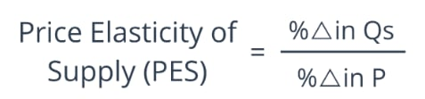

Tumutukoy sa dami ng produkto o serbisyo na gustong ibenta ng mga prodyuser sa isang takdang presyo at partikular na panahon
Batas ng Supply
Kapag tumataas ang presyo, tataas ang dami ng gusto at kayang ibenta, at kapag mababa ang presyo, bababa naman ang dami ng gusto at kayang ibenta (CETERIS PARIBUS)
Supply Function
Isang matematikong pagpapakita ng ugnayan ng presyo at quantity supplied sa pamamagitan ng formula: Qs = a - bP
QS= Dami ng supply
a= dami ng supply kung saan ang presyo ay 0
b= slope ng supply function
P= presyo
Supply Schedule
Talahanayan nagpapakita kung gaano karaming produkto o serbisyo ang nais gawin ng mga prodyuser.
Supply Curve
Tumutukoy sa grapikong representasyon ng batas ng supply. Ipinapakita nito ang negatibong relasyon ng presyo ng produkto at bilang ng nais gawin ng mga produsyer.
Mga Salik na Nakaaapekto sa Supply
- Pagbabago sa Teknolohiya
- Teknolohiya ay nakatutulong sa mga prodyuser na makabuo ng mas maraming suplay.
- Pagbabago sa halaga ng mga salik produksiyon
- Sa bawat pagtaas ng presyo ng alinmang salik, mangangahulugan ito ng pagtaas sa kabuuang gastos ng produksyon kaya maaaring bumaba ang suplay
- Pagbabago sa bilang ng nagtitinda
- "Bandwagon effect"
- Kung ano ang mga nauusong produkto ay nahihikayat ang mga prodyuser na magprodyus at magtinda nito
- Pagbabago sa presyo ng kaugnay na produkto (complementary at substitue products)
- Naaapektuhan ang parehong produkto.
- Ekspektasyon sa presyo
- “Kung tataas ang presyo sa hinaharap, maghohoard ang mga prodyuser ngayon”
- Okasyon
- Klima o Panahon
- Kalamidad
- Dali ng pagkasira o pagkabulok ng produkto
- Subsidy o tulong ng pamahalaan
Price Elasticity ng Supply
Ito ang paraan na ginagamit upang masukat ang magiging pagtugon ng quantity supplied ng mga prodyuser sa tuwing may pagbabago sa presyo nito.